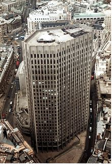

La Samsung Electronics Co., Ltd. quota le proprie azioni nei mercati regolamentati o borsa valori (stock exchange) della corea Korea Exchange (KRX), Londra (LSE) e Frankfurt (FWB).
(KRX) Korea Exchange is the sole securities exchange operator in South Korea (The North Korea doesn’t have a Stock Exchange because they don’t have private companies. Everything is owned by the State). The Korea Exchange was created through the integration of Korea Stock Exchange, Korea Futures Exchange and KOSDAQ Stock Market under the Korea Stock & Futures Exchange Act. Now the securities are divided in business division:
- KOSPI Market Division, all kind of securities;
- KOSDAQ Market Division, only equity securities;
- Derivatives Market Division, derivative like interest rate or stock index.
A stock exchange or securities exchange is an organized and regulated financial market where securities (bonds, shares) are bought and sold at prices governed by the forces of demand and supply. Securities are categorized into:
- Debt securities (bonds);
- Equity securities (common stocks).
The terms “stocks” is used in US, while in the UK the terms used is “Shares”. The stocks/shares are the parts in which the capital of a company is divided up into equal units. The people who own one or more securities are called shareholders or stockholders, they buy shares because they hope to make a profit if they sell the shares after their value has risen or they can also earn a dividend from the company’s profit.
A stockbroker is a professional intermediary who buys and sells stocks and other securities for both retail and institutional clients through a stock exchange or over the counter in return for a fee or commission.
Shareholders, bondholders and broker face certain risks when they choose to invest in a given company. Those who own stocks in a company run the risk of having share prices with poor earnings. Moreover, if a company performs poorly, it may opt not to issue dividends, thus eliminating a source of income for its investors.
There are two kinds of markets: Bear and Bull market.
- A bear market is when the economy is NOT doing well. If people are pessimistic, believing that stocks are going to drop, they are called “bears”;
- A bull market occurs when the economy is doing well. If people are optimistic, believing that stocks will rise, they are called “bulls”.
Stock exchanges can be “listed”, meaning they have a physical place, or “virtual”, meaning that they have financial market trader on the Internet without using any form of real money.
Nowadays, there are a variety of stock exchanges around the world like NYSE, LSE, TSE and KRX. Every stock exchange has an index that is traditionally as a good indication of the performance of major companies listed.
London Stock exchange
It is one of the oldest Stock Exchange in the world. The structure of the Stock Exchange changed on a day called “Big Bang”, when it became International Stock Exchange. The main changes are:
- Fixed commissions were abolished;
- A new system of free competition;
- All firms became broker that could buy or sell securities, without the need for an intermediary;
- The trading was performed via computer and telephone.
This computerised dealing system was called SETS (Stock Exchange Electronic Trading Service). This brought greater speed and efficiency to the market.
New Work Stock Exchange
It is the largest stock exchange in the world.The NYSE’s history dates back when 24 broker subscribed an agreement, since 2007 all NYSE stock can be traded using its hybrid Market, this allow traders to decide to use “open outcry” system or computer system to make transaction.
Tokyo Stock Exchange
It is the third largest stock exchange in the world. Its list is divided in 3 sections: First Section for large company, Second Section for mid-sized companies, and the Mothers’ section for start-up companies.